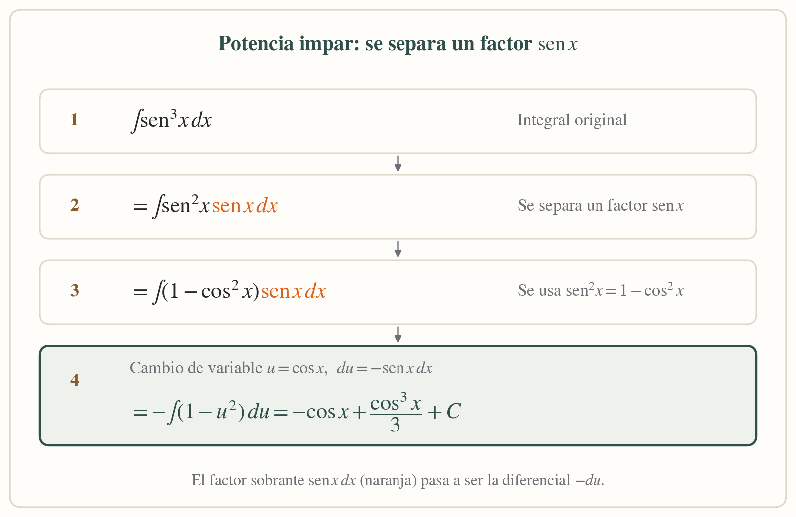
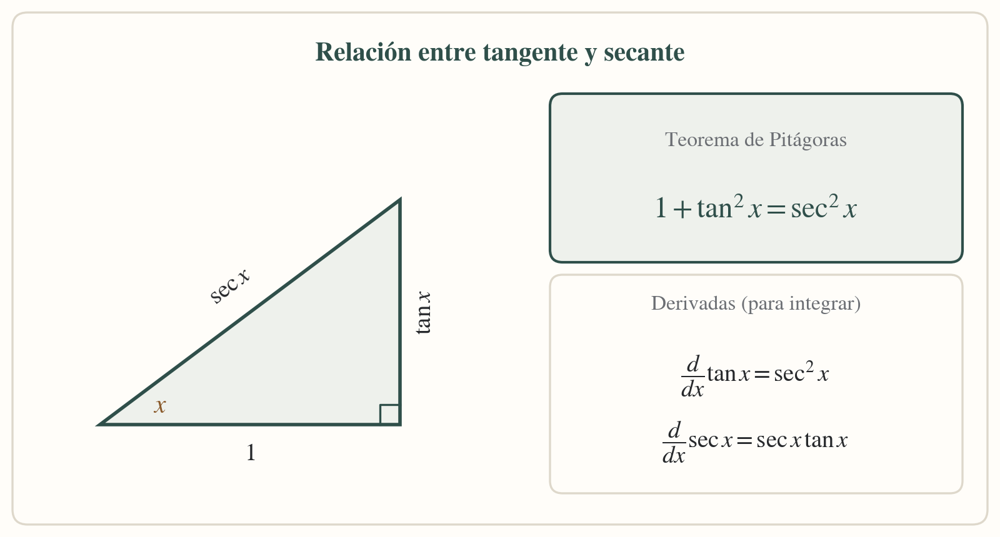
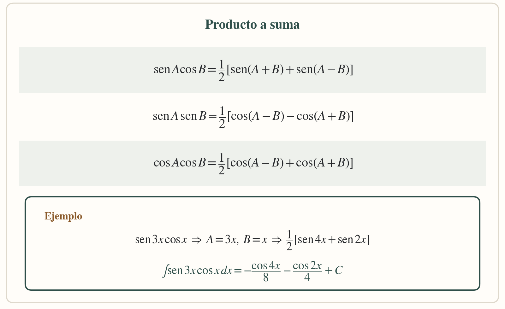
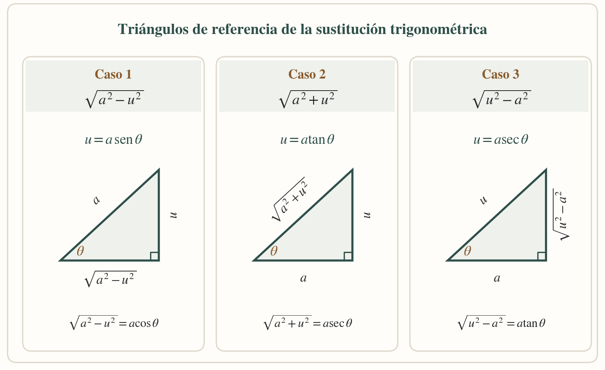
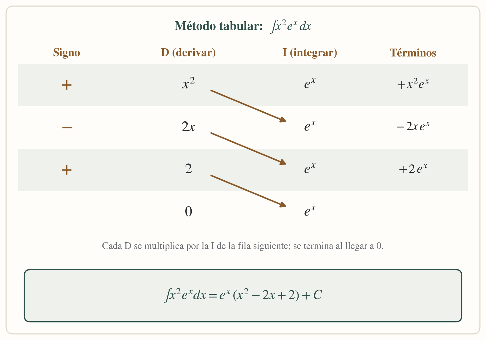
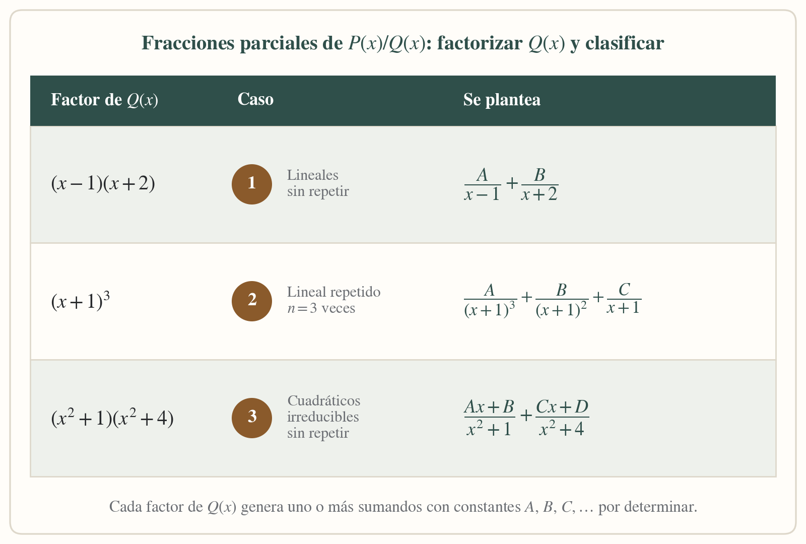

Unidad 2 · Ejercicios 8 al 15
Integrales trigonométricas y métodos de integración
Potencias y productos de funciones trigonométricas, sustitución trigonométrica, integración por partes y fracciones parciales.
Potencias impares de seno y coseno
El libro agrupa estos ejercicios en la sección de potencias de funciones trigonométricas. Cuando el exponente de seno o de coseno es impar, se separa un factor de esa función para formar la diferencial y el resto se transforma con sen²x + cos²x = 1.

Ejercicio 8 · Potencias impares de seno y coseno
Ejemplo 1
∫ sen³x dx
- El exponente de seno es impar (3); se separa un factor: sen³x = sen²x · senx.
- Se usa sen²x = 1 − cos²x, y se propone v = cosx, dv = −senx dx.
- ∫(1−v²)(−dv) = −∫dv + ∫v²dv = −v + v³/3.
Resultado: −cos x + (1/3) cos³x + C
Ejemplo 2
∫ cos⁵x dx
- El exponente de coseno es impar (5): cos⁵x = cos⁴x · cosx = (cos²x)² · cosx.
- Se usa cos²x = 1 − sen²x y se propone v = senx, dv = cosx dx.
- ∫(1−v²)²dv = ∫(1 − 2v² + v⁴)dv = v − (2/3)v³ + (1/5)v⁵.
Resultado: sen x − (2/3) sen³x + (1/5) sen⁵x + C
Ejemplo 3
∫ sen³x cos²x dx
- El exponente de seno es impar; se separa senx y se deja cos²x intacto: sen²x cos²x senx dx.
- Con sen²x = 1−cos²x y v = cosx, dv = −senx dx: ∫(1−v²)v²(−dv).
- = −∫(v² − v⁴)dv = −v³/3 + v⁵/5.
Resultado: −(1/3) cos³x + (1/5) cos⁵x + C
Ejemplo 4
∫ sen²x cos³x dx
- Ahora el exponente impar es el de coseno (3); se separa cosx: cos²x senx² cosx dx... se deja sen²x y cos²x cosx dx.
- Con cos²x = 1−sen²x y v = senx, dv = cosx dx: ∫v²(1−v²)dv.
- = ∫(v² − v⁴)dv = v³/3 − v⁵/5.
Resultado: (1/3) sen³x − (1/5) sen⁵x + C
Ejemplo 5
∫ cos³2x dx
- Exponente impar con ángulo múltiple: cos³2x = cos²2x · cos2x = (1−sen²2x)cos2x.
- Se propone v = sen2x, dv = 2cos2x dx, es decir cos2x dx = dv/2.
- (1/2)∫(1−v²)dv = (1/2)(v − v³/3).
Resultado: (1/2) sen 2x − (1/6) sen³2x + C
Potencias de tangente y cotangente
Se usa tan²x = sec²x − 1 (o cot²x = csc²x − 1) para separar un factor sec²x o csc²x, que es inmediato, y reducir el exponente restante.
Ejercicio 9 · Potencias de tangente y cotangente
Ejemplo 1
∫ tan³x dx
- Se separa tan²x: tan³x = tanx · tan²x, y se usa tan²x = sec²x − 1.
- ∫tanx(sec²x−1)dx = ∫tanx sec²x dx − ∫tanx dx.
- La primera es inmediata con v=tanx; la segunda es −ln|cosx|.
Resultado: (1/2) tan²x + ln |cos x| + C
Ejemplo 2
∫ cot³x dx
- De forma análoga, cot³x = cotx(csc²x − 1).
- ∫cotx csc²x dx − ∫cotx dx, con v = cotx en la primera.
Resultado: −(1/2) cot²x − ln |sen x| + C
Ejemplo 3
∫ tan⁴x dx
- Se separa tan²x: tan⁴x = tan²x(sec²x − 1) = tan²x sec²x − tan²x.
- ∫tan²x sec²x dx es inmediata (v=tanx); para ∫tan²x dx se usa de nuevo tan²x=sec²x−1.
- tan³x/3 − (tanx − x).
Resultado: (1/3) tan³x − tan x + x + C
Ejemplo 4
∫ cot⁴x dx
- cot⁴x = cot²x(csc²x − 1) = cot²x csc²x − cot²x.
- ∫cot²x csc²x dx es inmediata; ∫cot²x dx = ∫(csc²x−1)dx = −cotx − x.
Resultado: −(1/3) cot³x + cot x + x + C
Ejemplo 5
∫ tan³2x dx
- Con ángulo múltiple: tan³2x = tan2x(sec²2x − 1).
- ∫tan2x sec²2x dx − ∫tan2x dx, con v = 2x en cada cambio.
Resultado: (1/4) tan²2x + (1/2) ln |cos 2x| + C
Potencias de secante y cosecante
Cuando el exponente de secante o cosecante es par, se separa sec²x (o csc²x) para la diferencial y el resto se transforma con 1+tan²x = sec²x.

Ejercicio 10 · Potencias de secante y cosecante
Ejemplo 1
∫ sec⁴x dx
- Se separa sec²x: sec⁴x = sec²x · sec²x, y se usa sec²x = 1 + tan²x en el primer factor.
- ∫(1+tan²x) sec²x dx, con v = tanx, dv = sec²x dx.
- ∫(1+v²)dv = v + v³/3.
Resultado: tan x + (1/3) tan³x + C
Ejemplo 2
∫ csc⁴x dx
- csc⁴x = csc²x · csc²x = (1+cot²x) csc²x.
- Con v = cotx, dv = −csc²x dx: −∫(1+v²)dv = −(v+v³/3).
Resultado: −cot x − (1/3) cot³x + C
Ejemplo 3
∫ sec⁴2x dx
- sec⁴2x = (1+tan²2x) sec²2x, con v = tan2x, dv = 2sec²2x dx.
- (1/2)∫(1+v²)dv = (1/2)(v+v³/3).
Resultado: (1/2) tan 2x + (1/6) tan³2x + C
Ejemplo 4
∫ csc⁴3x dx
- csc⁴3x = (1+cot²3x) csc²3x, con v = cot3x, dv = −3csc²3x dx.
- −(1/3)∫(1+v²)dv = −(1/3)(v+v³/3).
Resultado: −(1/3) cot 3x − (1/9) cot³3x + C
Ejemplo 5
∫ tan²x sec⁴x dx
- Se deja sec²x para formar dv y se transforma el resto: tan²x sec²x · sec²x = tan²x(1+tan²x) sec²x.
- Con v = tanx, dv = sec²x dx: ∫v²(1+v²)dv = ∫(v²+v⁴)dv.
Resultado: (1/3) tan³x + (1/5) tan⁵x + C
Potencias pares de seno y coseno
Cuando el exponente es par y no hay un factor impar que separar, se usan las identidades de ángulo medio, aplicándolas una o varias veces según el exponente.
Ejercicio 11 · Potencias pares de seno y coseno
Ejemplo 1
∫ sen²x dx
- El exponente es par; se usa la identidad de ángulo medio sen²x = (1−cos2x)/2.
- ∫(1/2)dx − ∫(1/2)cos2x dx = x/2 − (1/4)sen2x.
Resultado: x/2 − (1/4) sen 2x + C
Ejemplo 2
∫ cos²x dx
- Se usa cos²x = (1+cos2x)/2.
- ∫(1/2)dx + ∫(1/2)cos2x dx = x/2 + (1/4)sen2x.
Resultado: x/2 + (1/4) sen 2x + C
Ejemplo 3
∫ sen⁴x dx
- sen⁴x = (sen²x)² = [(1−cos2x)/2]² = (1/4)(1 − 2cos2x + cos²2x).
- Se integra cos²2x con la misma identidad de ángulo medio otra vez: cos²2x = (1+cos4x)/2.
- Al desarrollar y simplificar se agrupan los términos.
Resultado: (3/8)x − (1/4) sen 2x + (1/32) sen 4x + C
Ejemplo 4
∫ cos⁴x dx
- cos⁴x = [(1+cos2x)/2]² = (1/4)(1 + 2cos2x + cos²2x), con cos²2x = (1+cos4x)/2 de nuevo.
Resultado: (3/8)x + (1/4) sen 2x + (1/32) sen 4x + C
Ejemplo 5
∫ sen²3x dx
- Se usa sen²3x = (1−cos6x)/2 (el ángulo doble de 3x es 6x).
- ∫(1/2)dx − (1/2)∫cos6x dx = x/2 − (1/12)sen6x.
Resultado: x/2 − (1/12) sen 6x + C
Productos de senos y cosenos de ángulos distintos
Cuando el integrando es un producto como sen mx · cos nx, con ángulos diferentes, se convierte en una suma con las identidades de producto a suma, y cada término se integra de forma inmediata.
sen A sen B = ½[cos(A−B) − cos(A+B)]
cos A cos B = ½[cos(A−B) + cos(A+B)]

Ejercicio 12 · Productos sen mx · cos nx y similares
Ejemplo 1
∫ sen 2x cos 3x dx
- Se usa sen A cos B = (1/2)[sen(A+B) + sen(A−B)], con A=2x, B=3x.
- sen5x + sen(−x) = sen5x − senx; se integra cada término.
- ∫(1/2)(sen5x − senx)dx = (1/2)[−cos5x/5 + cosx].
Resultado: −(1/10) cos 5x + (1/2) cos x + C
Ejemplo 2
∫ sen 4x sen 2x dx
- Se usa sen A sen B = (1/2)[cos(A−B) − cos(A+B)], con A=4x, B=2x.
- (1/2)[cos2x − cos6x]; se integra cada término.
Resultado: (1/4) sen 2x − (1/12) sen 6x + C
Ejemplo 3
∫ cos 5x cos 3x dx
- Se usa cos A cos B = (1/2)[cos(A−B) + cos(A+B)], con A=5x, B=3x.
- (1/2)[cos2x + cos8x]; se integra cada término.
Resultado: (1/4) sen 2x + (1/16) sen 8x + C
Ejemplo 4
∫ sen 5x cos 2x dx
- sen A cos B = (1/2)[sen(A+B)+sen(A−B)], con A=5x, B=2x.
- (1/2)[sen7x + sen3x]; se integra cada término.
Resultado: −(1/14) cos 7x − (1/6) cos 3x + C
Ejemplo 5
∫ cos 2x sen 4x dx
- Es sen4x cos2x: sen A cos B, con A=4x, B=2x.
- (1/2)[sen6x + sen2x]; se integra cada término.
Resultado: −(1/12) cos 6x − (1/4) cos 2x + C
Sustitución trigonométrica
Se usa cuando el integrando contiene una raíz de la forma √(a²−u²), √(a²+u²) o √(u²−a²), que no se resuelven por ningún método anterior. El formulario de casos propone, para cada una, una sustitución con seno, tangente o secante que elimina la raíz.

Ejercicio 13 · Sustitución trigonométrica
Ejemplo 1
∫ dx / [x² √(16 − x²)] Caso 1 del formulario
- La expresión es √(a²−u²) con a=4, u=x, así que se propone x = 4 sen θ, dx = 4 cos θ dθ.
- √(16−x²) = √(16−16sen²θ) = 4cos θ.
- Se sustituye: ∫ 4cosθ dθ / [16sen²θ · 4cosθ] = (1/16)∫csc²θ dθ = −(1/16)cot θ.
- Con el triángulo de referencia (cateto opuesto x, hipotenusa 4), cot θ = √(16−x²)/x.
Resultado: −√(16 − x²) / (16x) + C
Ejemplo 2
∫ dx / √(x² + 25) Caso 2 del formulario
- La expresión es √(a²+u²) con a=5, u=x, así que se propone x = 5 tan θ, dx = 5sec²θ dθ.
- √(x²+25) = 5 sec θ.
- ∫ 5sec²θ dθ / (5secθ) = ∫secθ dθ = ln|secθ + tanθ|.
- Con el triángulo (cateto opuesto x, adyacente 5, hipotenusa √(x²+25)): secθ=√(x²+25)/5, tanθ=x/5.
Resultado: ln (x + √(x² + 25)) + C
Ejemplo 3
∫ x² dx / √(x² + 9) Caso 2 del formulario
- Con a=3: x = 3tanθ, dx = 3sec²θ dθ, √(x²+9) = 3secθ.
- ∫ (9tan²θ)(3sec²θ)dθ / (3secθ) = 9∫tan²θ secθ dθ = 9∫(sec³θ − secθ)dθ.
- ∫sec³θ dθ se resuelve por partes (fórmula conocida): (1/2)[secθ tanθ + ln|secθ+tanθ|].
- Se regresa a x con el triángulo del caso 2 y se simplifica.
Resultado: (x/2)√(x² + 9) − (9/2) ln (x + √(x² + 9)) + C
Ejemplo 4
∫ dx / [x² √(x² − 4)] Caso 3 del formulario
- La expresión es √(u²−a²) con a=2, u=x, así que se propone x = 2secθ, dx = 2secθ tanθ dθ.
- √(x²−4) = 2 tanθ.
- ∫ 2secθ tanθ dθ / [4sec²θ · 2tanθ] = (1/4)∫cosθ dθ = (1/4)senθ.
- Con el triángulo (hipotenusa x, adyacente 2, opuesto √(x²−4)): senθ = √(x²−4)/x.
Resultado: √(x² − 4) / (4x) + C
Ejemplo 5
∫ √(x² − 16) / x dx Caso 3 del formulario
- Con a=4: x = 4secθ, dx = 4secθ tanθ dθ, √(x²−16) = 4tanθ.
- ∫ (4tanθ)(4secθ tanθ)dθ / (4secθ) = 4∫tan²θ dθ = 4∫(sec²θ−1)dθ.
- = 4(tanθ − θ).
- Del triángulo: tanθ = √(x²−16)/4 y θ = arcsec(x/4).
Resultado: √(x² − 16) − 4 arcsec(x/4) + C
Integración por partes
Se aplica cuando el integrando es un producto de dos funciones de distinto tipo (polinomio por exponencial, polinomio por trigonométrica, logaritmo, etc.) y no hay una sustitución simple que lo resuelva.
Cada ejemplo se resuelve primero paso a paso con la fórmula de partes y después se muestra según la clasificación por casos (orden LIATE para elegir u, y el método tabular como atajo cuando hay que aplicar partes varias veces).

Ejercicio 14 · Integración por partes
Ejemplo 1
∫ x e²ˣ dx
Explicación paso a paso
- Se elige u = x (se deriva fácil) y dv = e²ˣdx; entonces du = dx, v = e²ˣ/2.
- Se aplica la fórmula: ∫u dv = uv − ∫v du.
- = x·e²ˣ/2 − ∫e²ˣ/2 dx = xe²ˣ/2 − e²ˣ/4.
Según la clasificación de casos (LIATE y método tabular)
- Es el Caso: polinomio × exponencial; por LIATE se deriva el polinomio (u) y se integra la exponencial (dv).
- Se arma la tabla: columna D (derivadas de x): x, 1, 0; columna I (integrales de e²ˣ): e²ˣ/2, e²ˣ/4.
- Se multiplica en diagonal alternando signos + y −, y se detiene cuando D llega a 0: +x·(e²ˣ/2) − 1·(e²ˣ/4).
Resultado: (x/2) e²ˣ − (1/4) e²ˣ + C
Ejemplo 2
∫ x cos x dx
Explicación paso a paso
- u = x, dv = cosx dx; du = dx, v = senx.
- ∫u dv = uv − ∫v du = x senx − ∫senx dx.
Según la clasificación de casos (LIATE y método tabular)
- Es el Caso: polinomio × trigonométrica; u = x (se deriva), dv = cosx dx (se integra).
- Tabla: columna D: x, 1, 0; columna I (integrales de cosx): senx, −cosx.
- Diagonales con signos +, −: +x·senx − 1·(−cosx) = x senx + cosx.
Resultado: x sen x + cos x + C
Ejemplo 3
∫ x² eˣ dx
Explicación paso a paso
- u = x², dv = eˣdx; du = 2x dx, v = eˣ. Primera aplicación: x²eˣ − 2∫xeˣdx.
- La integral restante, ∫xeˣdx, se vuelve a resolver por partes (u=x, dv=eˣdx): xeˣ − eˣ.
- Se sustituye de regreso: x²eˣ − 2(xeˣ − eˣ).
Según la clasificación de casos (LIATE y método tabular)
- Es el Caso: polinomio × exponencial, pero el polinomio es de grado 2, así que la tabla tiene un renglón más que en el Ejemplo 1.
- Tabla: columna D: x², 2x, 2, 0; columna I (integrales repetidas de eˣ): eˣ, eˣ, eˣ.
- Diagonales con signos +,−,+: +x²·eˣ − 2x·eˣ + 2·eˣ (se detiene en D = 0).
Resultado: eˣ(x² − 2x + 2) + C
Ejemplo 4
∫ x sen 3x dx
Explicación paso a paso
- u = x, dv = sen3x dx; du = dx, v = −cos3x/3.
- = −x cos3x/3 + (1/3)∫cos3x dx = −xcos3x/3 + (1/9)sen3x.
Según la clasificación de casos (LIATE y método tabular)
- Caso: polinomio × trigonométrica (igual que el Ejemplo 2, con ángulo múltiple).
- Tabla: columna D: x, 1, 0; columna I (integrales de sen3x): −cos3x/3, −sen3x/9.
- Diagonales +,−: +x·(−cos3x/3) − 1·(−sen3x/9) = −xcos3x/3 + sen3x/9.
Resultado: −(x/3) cos 3x + (1/9) sen 3x + C
Ejemplo 5
∫ ln x dx
Explicación paso a paso
- Se elige u = ln x y dv = dx (el otro factor implícito); du = dx/x, v = x.
- ∫u dv = uv − ∫v du = x ln x − ∫x·(1/x)dx = x ln x − ∫dx.
Según la clasificación de casos (LIATE y método tabular)
- Es el Caso: función logarítmica sola; en LIATE, la logarítmica siempre se elige como u, nunca como dv.
- Aquí no conviene la tabla, porque dv = dx no vuelve a integrarse de forma útil; se resuelve en un solo paso.
- u = ln x (se deriva), dv = dx (se integra): du = dx/x, v = x.
Resultado: x ln x − x + C
Fracciones parciales
Se aplica para integrar una fracción propia P(x)/Q(x). Se factoriza Q(x) y, según el formulario de casos, se descompone la fracción en una suma de fracciones más simples, cuyo denominador es cada factor (o potencia de factor) de Q(x).

Cada ejemplo se resuelve primero de forma intuitiva (planteando A, B, D y despejando) y después se identifica explícitamente con el caso del formulario y su fórmula general.
Ejercicio 15 · Fracciones parciales
Ejemplo 1
∫ (x+1) / [(x−2)(x+3)] dx
Explicación paso a paso
- El integrando es una fracción propia (el numerador tiene menor grado que el denominador) con dos factores lineales distintos.
- Se propone (x+1)/[(x−2)(x+3)] = A/(x−2) + B/(x+3) y se multiplica por el denominador común: x+1 = A(x+3) + B(x−2).
- Con x=2: 3=5A ⇒ A=3/5. Con x=−3: −2=−5B ⇒ B=2/5.
- Se integra cada fracción simple por separado.
Según el formulario (Caso 1: factores lineales, no se repiten)
- Q(x) = (x−2)(x+3) es producto de factores lineales (a₁x+b₁)(a₂x+b₂), ninguno repetido: es el Caso 1 del formulario.
- Fórmula general del Caso 1: P(x)/Q(x) = A₁/(a₁x+b₁) + A₂/(a₂x+b₂).
- Se identifica a₁=1,b₁=−2,a₂=1,b₂=3 y se obtienen A₁=3/5, A₂=2/5, igual que arriba.
Resultado: (3/5) ln|x−2| + (2/5) ln|x+3| + C
Ejemplo 2
∫ dx / [(x−1)(x+2)]
Explicación paso a paso
- 1/[(x−1)(x+2)] = A/(x−1) + B/(x+2).
- 1 = A(x+2) + B(x−1). Con x=1: A=1/3. Con x=−2: B=−1/3.
Según el formulario (Caso 1: factores lineales, no se repiten)
- Igual que el ejemplo anterior, Q(x) es producto de dos factores lineales distintos: Caso 1.
- Se aplica directamente P(x)/Q(x) = A₁/(a₁x+b₁) + A₂/(a₂x+b₂) con P(x)=1, obteniendo A₁=1/3, A₂=−1/3.
Resultado: (1/3) ln|x−1| − (1/3) ln|x+2| + C
Ejemplo 3
∫ dx / [x(x−1)²]
Explicación paso a paso
- El factor (x−1) aparece elevado al cuadrado, así que se propone 1/[x(x−1)²] = A/x + B/(x−1) + D/(x−1)².
- 1 = A(x−1)² + Bx(x−1) + Dx. Con x=0: A=1. Con x=1: D=1.
- Comparando el coeficiente de x²: 0 = A+B ⇒ B=−1.
- Se integra cada término; el de D/(x−1)² da −D/(x−1).
Según el formulario (Caso 2: factor lineal que se repite)
- Q(x) = x(x−1)² tiene el factor (x−1) repetido 2 veces: es el Caso 2 del formulario.
- Fórmula general del Caso 2 para (a₁x+b₁) repetido n veces: A₁/(a₁x+b₁)ⁿ + A₂/(a₁x+b₁)ⁿ⁻¹ + … + Aₙ/(a₁x+b₁), más un término A/x por el factor simple restante.
- Con n=2 y a₁x+b₁=x−1 se obtiene A₁/(x−1)² + A₂/(x−1), que corresponde a D=1 y B=−1 de la columna anterior.
Resultado: ln|x| − ln|x−1| − 1/(x−1) + C
Ejemplo 4
∫ (x+4) / (x+1)² dx
Explicación paso a paso
- (x+4)/(x+1)² = A/(x+1) + B/(x+1)².
- x+4 = A(x+1) + B. Con x=−1: B=3. Comparando coeficientes de x: A=1.
Según el formulario (Caso 2: factor lineal que se repite)
- Q(x) = (x+1)² es un único factor lineal repetido 2 veces: Caso 2 con n=2.
- Fórmula general: A₁/(ax+b)² + A₂/(ax+b). Aquí a=1, b=1, A₁=3 (el término sin dividir) y A₂=1.
Resultado: ln|x+1| − 3/(x+1) + C
Ejemplo 5
∫ x dx / [(x²+1)(x+1)]
Explicación paso a paso
- x/[(x²+1)(x+1)] = (Ax+B)/(x²+1) + D/(x+1).
- x = (Ax+B)(x+1) + D(x²+1). Con x=−1: −1=2D ⇒ D=−1/2.
- Comparando coeficientes de x²: 0=A+D ⇒ A=1/2. Con el término independiente: 0=B+D ⇒ B=1/2.
- El término (x/2+1/2)/(x²+1) se separa en x/(x²+1) (logaritmo) más 1/(x²+1) (arco tangente).
Según el formulario (Caso 3: factor cuadrático irreducible, no se repite)
- Q(x) = (x²+1)(x+1) tiene un factor cuadrático irreducible x²+1 (no tiene raíces reales) que no se repite: es el Caso 3 para ese factor, combinado con un Caso 1 para (x+1).
- Fórmula general del Caso 3: (A₁x+B₁)/(a₁x²+b₁x+c₁), que aquí da (Ax+B)/(x²+1) con A=1/2, B=1/2.
- El factor lineal (x+1) aporta el término D/(x+1) del Caso 1, con D=−1/2, igual que arriba.
Resultado: (1/4) ln(x²+1) + (1/2) arctan x − (1/2) ln|x+1| + C